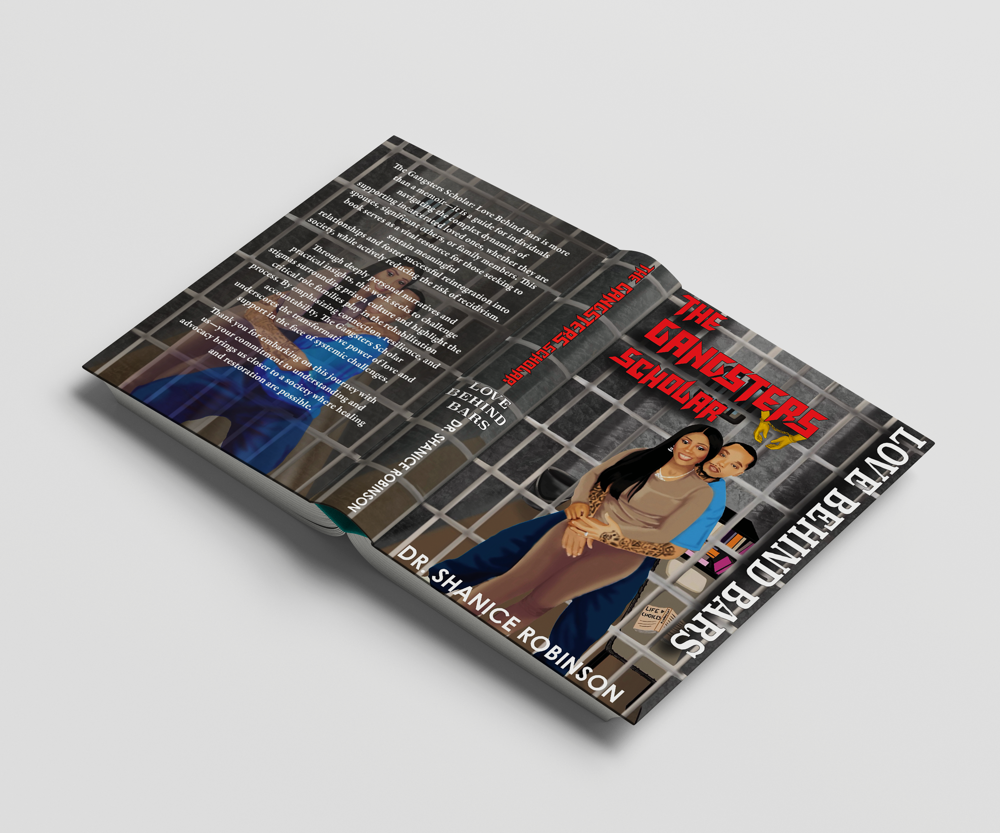
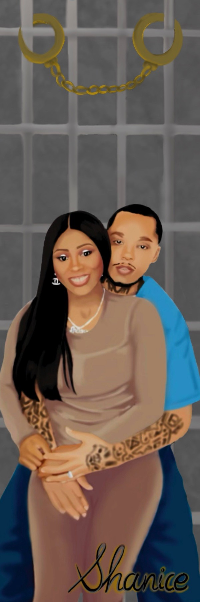
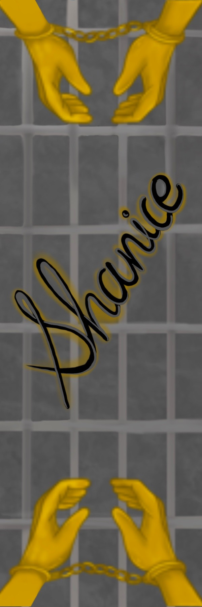
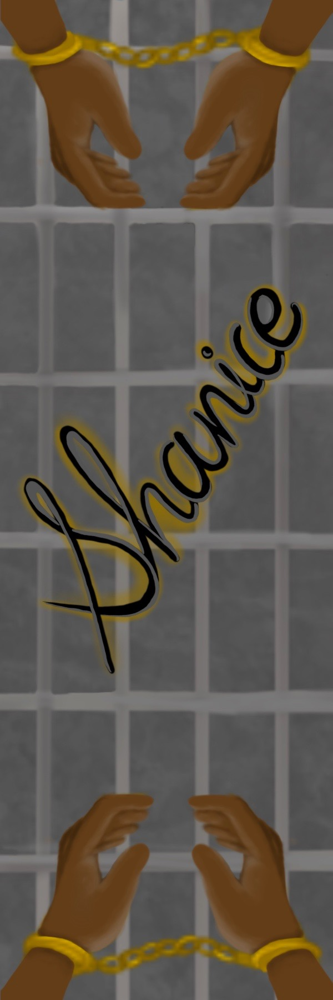
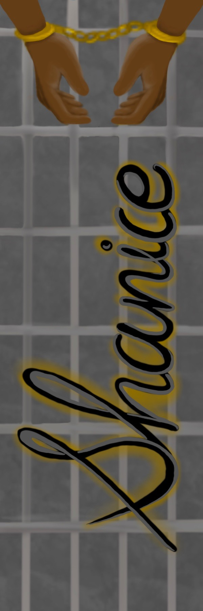
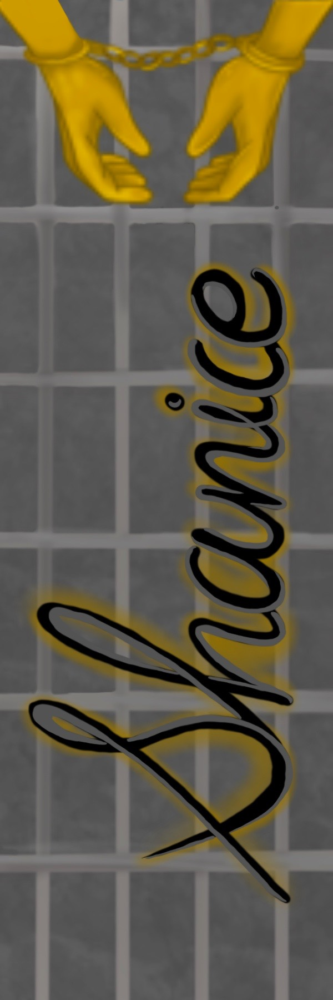
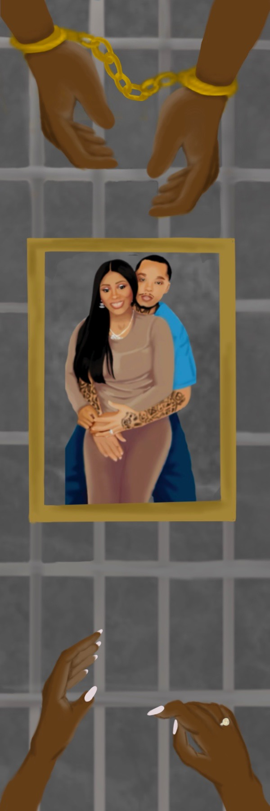

The Gangsters Scholar
Love Behind Bars.
Book cover for a memoir about love and surviving incarceration together. Designed without making it look like a crime story.
Book cover for a memoir about love and surviving incarceration together. Designed without making it look like a crime story.
Dr. Shanice Robinson-Blacknell came to me with something personal. She'd written a memoir, part love story, part practical guide, about what it actually means to stand by a partner who is incarcerated. She and Joe had lived it. Now she wanted the book to look like that experience felt: heavy and real, but warm.
The challenge wasn't just design. It was tone. A book about incarceration can read like a thriller or a cautionary tale. This one needed to read like a love letter.
"More than a memoir — it is a guide for individuals navigating the complex dynamics of supporting incarcerated loved ones."
Dr. Shanice Robinson-Blacknell
The centrepiece of the entire book package is a digital portrait of Shanice and Joe, drawn by hand in Procreate.
The setting is intentional. The cell bars frame them like a portrait. The stack of books in the background signals Joe's journey. The "Life Choices" notepad on the floor is a quiet detail — the kind that rewards a second look.

Early illustration — establishing the composition and figures

Final illustration — refined detail, warm skin tones, full cell environment
The cover went through multiple rounds of type treatment exploration. The illustration stayed consistent — the typographic system around it was the variable. Each version was testing a different emotional register: bold and graphic, soft and romantic, or raw and street-level.

Gold "GANGSTERS" with bold all-caps white "LOVE BEHIND BARS". High contrast, confident. Reads clearly at distance but didn't feel like a memoir. The gold felt at odds with the raw emotional subject matter.

A softer direction: all-white text throughout, with "LOVE BEHIND BARS" in pink. This pushed the romance more strongly, but the softness created a tonal mismatch, the bars and cell environment read harder.

The red distressed type carried the heaviness the story needed. It feels urgent, with a higher contrast. The touch of gold handcuffed arms was an essential to speak on the authenticity of the story.
Every colour in this book package has a source. The grey tones come directly from the prison cell environment in the illustration. The gold references the handcuffs used across the bookmark series — precious metal on a tool of restriction. The red is the headline type: loud, urgent, alive.
8-color palette — derived from the illustration environment and type treatments
The back cover uses the same cell-bar illustration as a full-bleed background — but inverted using the original photograph. The visual feels like turning the book over reveals a more private, quieter moment of the same relationship.
The back cover copy was set in a bold serif directly over the illustration, legible against the dark bars.
The imagery and text felt disconnected, reading as two separate elements rather than a unified composition. It lacked visual cohesion and did not align with the author's vision for the book.

This direction was ultimately selected for publication. The illustration and text work together more cohesively, creating a stronger visual flow while ensuring the book summary remains the primary focal point for readers.
The bookmark series extends the visual language of the cover into something collectible. Each bookmark explores a different facet of the book's. This was used by Dr. Shanice for marketing purposes.
The gold handcuffs appear across multiple bookmarks as a recurring symbol, something that binds, but also, in this context, connects.






Gold appears in almost every bookmark. It becomes the series' thread. Precious against cold grey. Love against restriction.
The hand-lettered signature bookmarks work as an authorship mark, the kind of signature you'd find inside a copy she handed you.
Every bookmark pulls from the same environment as the cover: the grey cell-tile wall, the bar grid, the warm skin tones.
The full book package — front cover, back cover, spine, and bookmark series — went to print and is now a real, published, purchasable book. Seeing your illustration printed at book scale, in a reader's hands, is a different kind of finish line. The design lives in the world now.


The cover could have gone harder or softer, both would have been wrong. Finding the exact emotional register took more iteration than any visual decision did.
Every element in the illustration is a choice. Graphic design for a book cover is also a form of visual writing, the image tells the story before the reader opens the cover.
The cover, back cover, spine, and six bookmarks all had to feel like one world. Building that consistency across formats was the core design challenge of the project.
The decisions I made here: hierarchy, emotional tone, visual world-building, are the same decisions that live inside any well-designed interface.
When this is personal, the stakes are different. The design had to honor what Shanice and Joe had been through, that responsibility made every decision more deliberate.